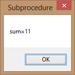

Visual Studio 2013 Lesson 16: Sub Procedures
[Lesson 15] << [Contents] >> [Lesson 17]
Sub procedures help to make programs smaller and easier to manage. A sub procedure begins with a Sub keyword and ends with an End Sub keyword. The program structure of a sub procedure is as follows:
Sub ProcedureName (arguments)
Statements
End Sub
In this example, we create a sub procedure sum to sum up two values that are specified as the arguments. The main program can reference a procedure by using its name together with the arguments in the parentheses.
Private Sub
Form1_Load(sender As Object, e As EventArgs) Handles MyBase.Load
sum(5, 6) End Sub Sub sum(a As Single, b
As Single) MsgBox(“sum=”& a + b)
End Sub
Running the program produces a message box
 Figure 16.1
{kind=link}
Example 16.2: Password Cracker
This is a passwords cracking program where it can generate possible passwords and compare each of them with the actual password; and if the generated password found to be equal to the actual password, login will be successful. In this program, a timer is inserted into the form and it is used to do a repetitive job of generating the passwords.
We create a passwords generating procedure generate () and it is called by the e Timer1_Tick() event so that the procedure is repeated after every interval. The interval of the timer can be set in its properties window where a value of 1 is 1 millisecond, so a value of 1000 is 1 second; the smaller the value, the shorter the interval. However, do not set the timer to zero because if you do that, the timer will not start. We shall set the Timer’s interval at 100 which is equivalent to 0.1 second. The Timer1.Enabled property is set to false so that the program will only start generating the passwords after you click on the Generate button. Rnd is a VB function that generates a random number between 0 and 1. Multiplying Rnd by 100 will obtain a number between 0 and 100. Int is a Visual Studio 2013 function that returns an integer by ignoring the decimal part of that number.
Therefore, Int(Rnd*100) will produce a number between 0 and 99, and the value of Int(Rnd*100)+100 will produce a number between 100 and 199.Finally, the program uses If…Then…Else to check whether the generated password is equal the actual password or not; and if they are equal, the passwords generating process will be terminated by setting the Timer1.Enabled property to false.
The Code
Public Class Form1
Dim password As Integer Dim crackpass As Integer
Private Sub Button1_Click(sender As Object, e As EventArgs) Handles Button1.Click
Timer1.Enabled = True
End Sub
Private Sub Timer1_Tick(sender As Object, e As EventArgs) Handles Timer1.Tick
generate()
If crackpass = password Then
Timer1.Enabled = False
Label1.Text = crackpass
MsgBox(“Password Cracked!Login Successful!”)
Else Label1.Text = crackpass
Label2.Text = “Please wait…”
End If
End Sub
Sub generate()
crackpass = Int(Rnd() * 100) + 100
End Sub
Private Sub Form1_Load(sender As Object, e As EventArgs) Handles MyBase.Load
password = 123
End Sub
End Class
The output
{kind=link}
Figure 16.2: Password Generating Phase
{kind=link}
Figure 16.3: Message Showing Successful Login